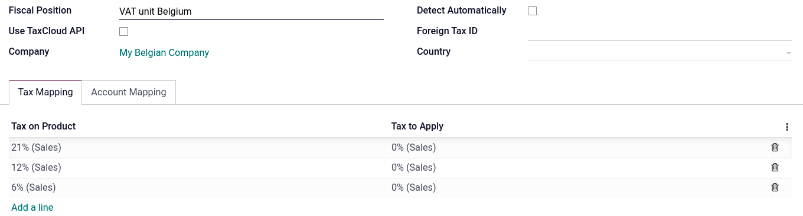
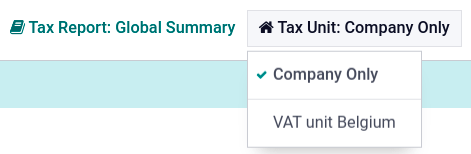

Unidades de IVA¶
Importante
Esto solo se aplica en entornos multiempresa.
Una unidad de IVA es un grupo de empresas sujetas al IVA que legalmente no dependen la una de la otra, pero están muy ligadas en cuestiones organizacionales, financieras y económicas, por lo que se consideran la misma empresa sujeta al IVA. Las unidades IVA no son obligatorias, pero si las crea, las empresa que sean parte de la unidad deben ser del mismo país, deben usar la misma divisa y una debe elegir una de las empresas para que sea la empresa representante de la unidad de IVA. Las unidades de IVA tienen un número de identificación fiscal (como un RFC, CUIT, CUIL, NIT, RUC, entre otros) que solo se usa en las declaraciones fiscales. Las empresas miembro de la unidad usan su número de identificación fiscal para propósitos comerciales.
Example
La empresa A debe €300,000.00 en impuestos de IVA y la empres B puede recuperar €280,000.00 en impuestos de IVA. Estas empresas se juntan en una unidad de IVA para que con las dos cantidades solo pague €20,000.00 en impuestos de IVA.
Configuración¶
Para configurar una unidad de IVA, vaya a menuselection:Ajustes --> Ajustes generales, baje a la sección Empresas y haga clic en Gestionar empresas. Seleccione la empresa que funge como representante y en la pestaña Información general, llene los campos obligatorios para que se exporten como .XML al exportar el reporte de impuestos: Nombre de la empresa, Dirección, RFC, Divisa, Teléfono, and Correo electrónico.
Después, haga clic en la pestaña Unidades de IVA, Agregar una línea y seleccione una unidad de IVA existente o cree una nueva. Ingrese un nombre para la unidad, seleccione el país de las empresas miembro, el reporte de impuestos, las empresas, la empresa principal que funge como la representante y el número de identificación fiscal de la unidad de IVA.

Posición fiscal¶
Como las transacciones entre las empresas miembro de la misma unidad de IVA no están sujetas a IVA, es posible crear un mapeo de impuestos (posición de impuestos) para evitar que se aplique el IVA en transacciones internas.
Asegúrese de que seleccionó una empresa miembro, después vaya a y Cree una posición fiscal nueva. Haga clic en la pestaña mapeo de impuestos, seleccione el Impuesto sobre el producto que normalmente se aplica a las transacciones entre empresas que no son miembros. En Impuestos a aplicar seleccione el impuesto del 0% para transacciones entre las empresas miembro.
Haga lo mismo en la pestaña mapeo de cuentas si es necesario. Repita este proceso para cada empresa miembro en su base de datos.
Example
Puede que los impuestos no sean los mismos que los que se muestran en la captura de pantalla, depende de su paquete de localización.
Después, abra la aplicación Contactos para asignar la posición fiscal. Busque a una de las empresas miembro y abra el contacto. Haga clic en la pestaña Venta y compra y en el campo Posición fiscal ingrese la posición fiscal que se creó para la unidad de IVA. Repita este proceso para cada empresa que sea miembro y para cada base de datos de cada empresa.
Informe de impuestos¶
La empresa que funja como representante puede acceder al reporte de impuestos adicional de la unidad de IVA desde y en Unidad tributaria elija Unidad de IVA. Este reporte contiene las transacciones adicionales de todas las empresas miembro y el archivo de exportación .XML contiene el nombre y el número de IVA de la empresa principal.
